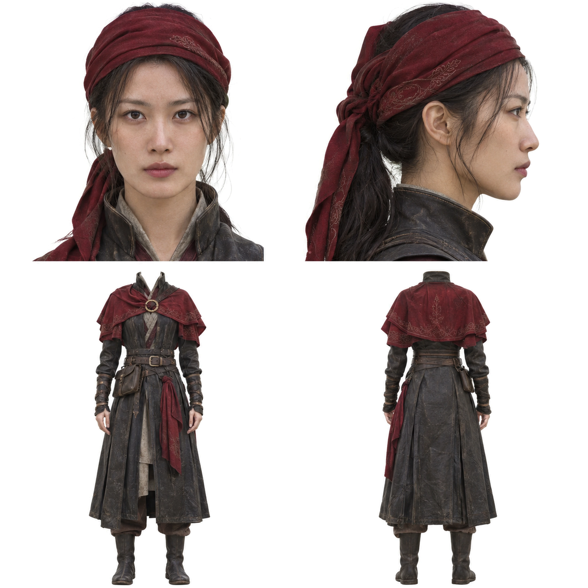
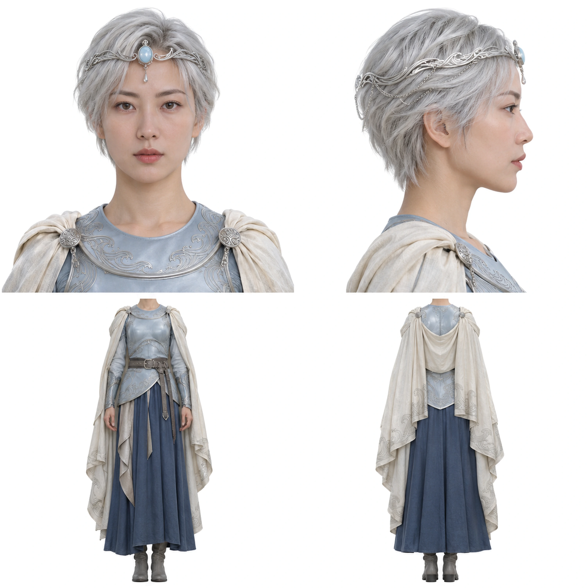
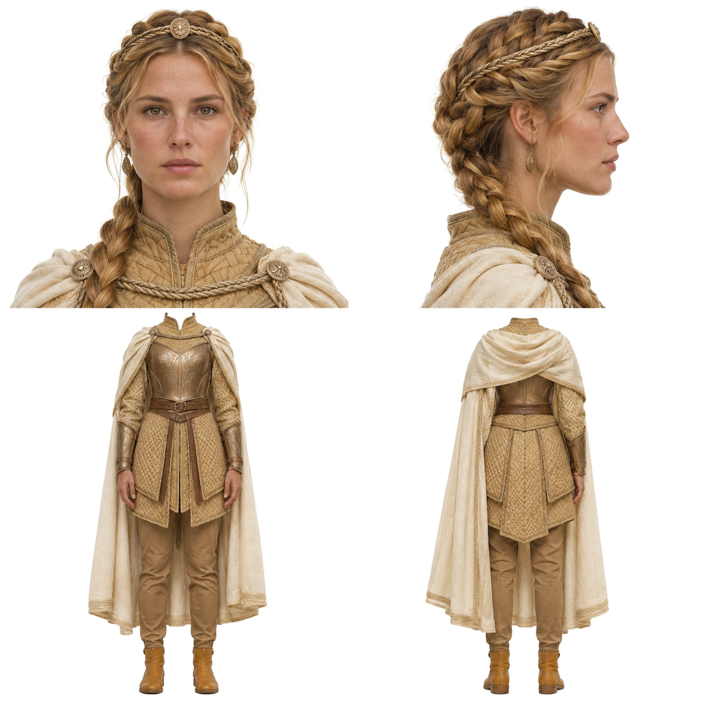
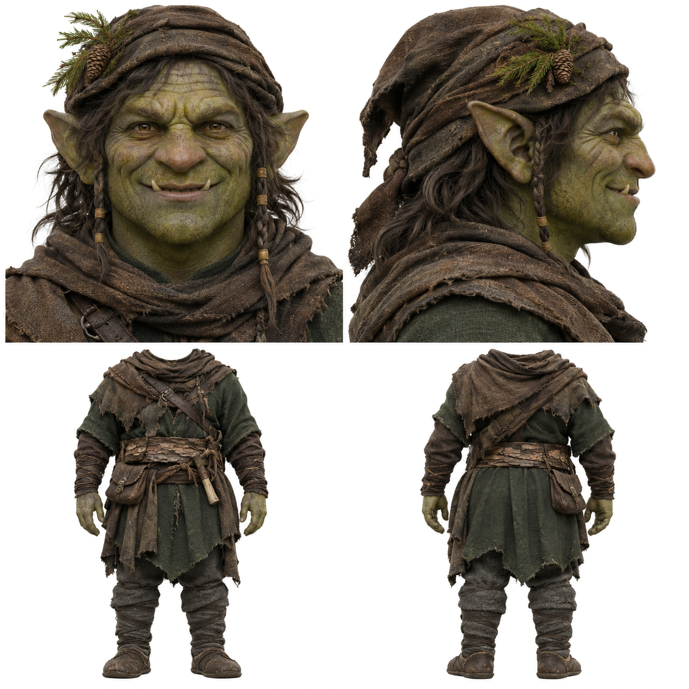
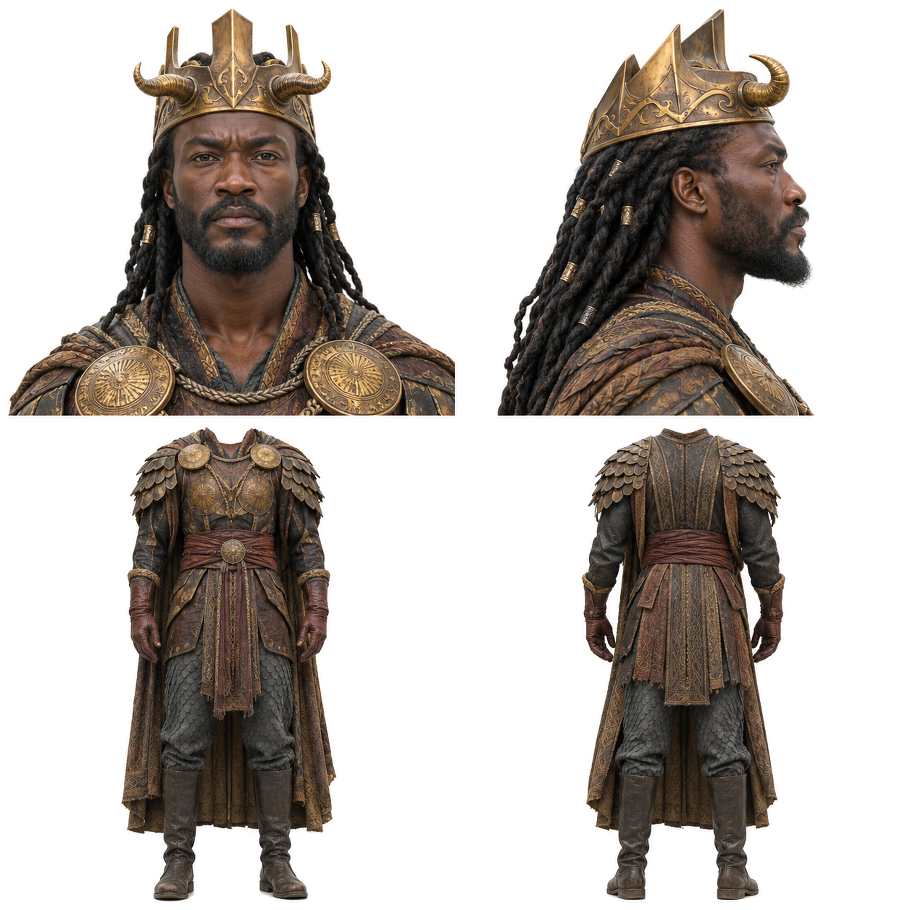
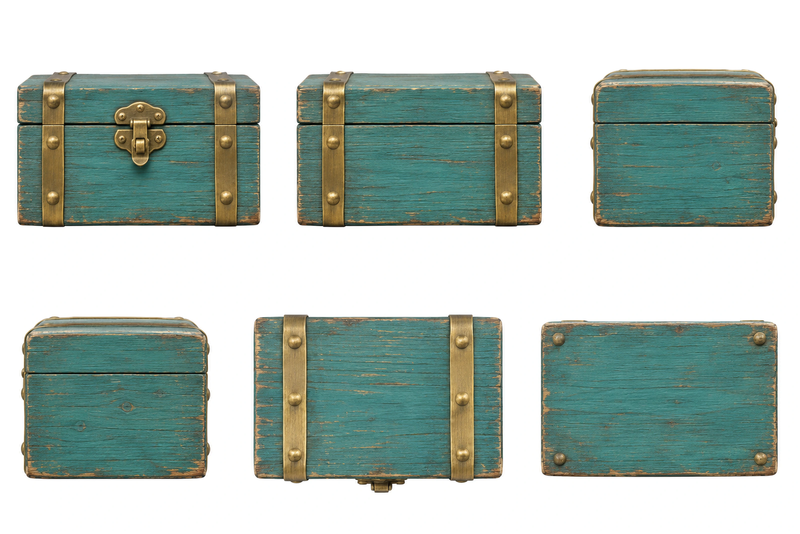
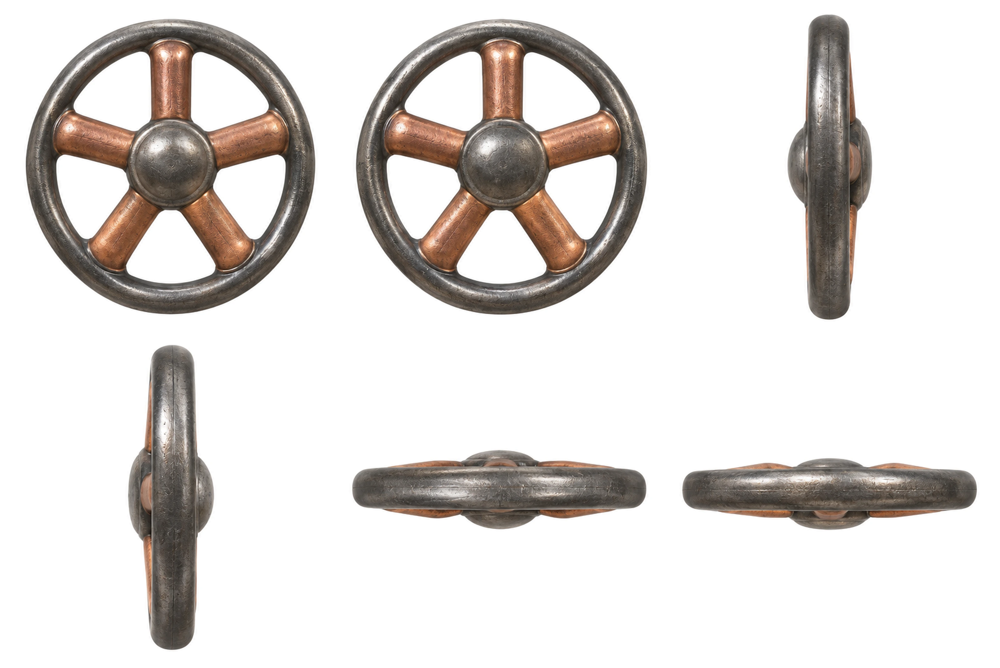

游戏广告
游戏广告2
正在连接在线视频…
视频简介
赤巾游侠在紫岩场地中央应对零散侦察兵。群袭涌入后，奖励箱出现，银发援军加入并带来新的蓝白光效。首领警报响起，黄铜角冠角色进场，最终战斗失败。图像采用独立原创真人化设计，界面提示以脚本描述。
在快手观看原视频 ↗制作资产
角色资产

赤巾游侠
俯视竞技广告的中轴主角色。 原创酒红头巾、深色皮衣和短披肩。红色弧光由后期合成。 成片未完整展示的方位按可见造型补全。

银发援军
由奖励选项进入画面的支援角色。 银发、蓝银浅甲和象牙披肩，蓝白光效与红弧区分。 成片未完整展示的方位按可见造型补全。

金发候选援军
奖励中的第二候选造型，用于选项静帧。 蜂蜜金编发、浅铜护胸、黄褐短靴。 成片未完整展示的方位按可见造型补全。

绿苔侦察兵
围场开头稀疏分布的小型敌对单位。 苔绿皮肤、棕布甲和暗绿衣。远景以短矮比例识别。 成片未完整展示的方位按可见造型补全。
暗红群袭兵
随波次大量逼近中轴的群袭单位。 暗灰盔和窄红披肩，身形便于多个编组复用。 成片未完整展示的方位按可见造型补全。

黄铜角冠首领
警报后进入场地的高大终局角色。 黄铜短角冠、金铜圆片胸甲、暗蓝裤，保持与小兵显著比例差。 成片未完整展示的方位按可见造型补全。
场景资产
道具资产
赤金奖励箱
红漆木、窄铜包角和圆锁。 前段奖励进度触发后作为出现、开箱和选项切换提示。 成片未完整展示的方位按可见造型补全。

青金奖励箱
灰青漆木小箱，直盖和铜框。 奖励切换后出现在后续进度位置。 成片未完整展示的方位按可见造型补全。

环形银色法器
五根圆端短辐条、银色外圈和中央圆轴。 支援获得后在人物周围盘旋，后期做旋转。 成片未完整展示的方位按可见造型补全。
小型奖励圆币
素面黄铜小圆片，有压纹边。 用于群袭间隙的掉落提示和反光特写。 成片未完整展示的方位按可见造型补全。
剧本与分镜
完整剧本与分镜脚本
游戏广告 · 游戏广告2 原片时长 26.84 秒 故事梗概 赤巾游侠在紫岩场地中央应对零散侦察兵。群袭涌入后，奖励箱出现，银发援军加入并带来新的蓝白光效。首领警报响起，黄铜角冠角色进场，最终战斗失败。图像采用独立原创真人化设计，界面提示以脚本描述。 人物 赤巾游侠是操作焦点，银发援军是已选支援，金发援军作为候选；绿苔侦察兵、暗红群袭兵和角冠首领形成三个阶段。 场景 紫岩围场开放且平坦，中央用色差定位主角色，四周为群袭入口。 道具用途 两个奖励箱区分前后奖励阶段。圆币和环形法器指示掉落与新能力。界面面板不单独出图。 剧本与分镜 按原片抽帧重建的复拍制作稿。画面未能确认的对白、音效与镜头节奏按下表执行。 | 镜号 | 画面内容 | 镜头视角 | 使用资产 | 动作描述 | 台词/旁白 | 音效 | 单镜头时长 | | 01 | 赤巾游侠对零散绿苔兵蓄力 | 固定近垂直俯拍 | 赤巾游侠、绿苔侦察兵、紫岩围场 | 游侠转向敌群，红弧短暂绕身 | — | 短促弧声 | 4.40秒 | | 02 | 金光落入场内，群袭出现 | 俯视宽景 | 暗红群袭兵、赤巾游侠 | 圆形落点闪亮，边缘大群开始合拢 | — | 落点重音 | 1.80秒 | | 03 | 攻击波反复分离群袭 | 俯视持续跟拍 | 赤巾游侠、暗红群袭兵、小型奖励圆币 | 游侠穿行，红弧扫过边界，圆币出现 | — | 密集脚步、奖励音 | 5.10秒 | | 04 | 赤金箱亮起，两名候选进入选择 | 俯视画面压暗接道具近景 | 赤金奖励箱、银发援军、金发候选援军 | 箱出现后展示两个候选，选择银发 | 提示：选择援军。 | 开箱、提示音 | 3.20秒 | | 05 | 银发援军入场，环形法器旋转 | 俯视中景 | 两位主角、环形银色法器、青金奖励箱、群袭兵 | 蓝白效果加入红弧，边缘群体继续涌入 | — | 银铃、循环脉冲 | 4.50秒 | | 06 | 首领来临提示 | 垂直俯视广角 | 紫岩围场、群袭兵、赤巾游侠 | 红边预警覆盖场地，中心出现角冠剪影 | 提示：首领来袭。 | 警报 | 2.20秒 | | 07 | 角冠首领进入，队伍被压缩 | 定轴俯视 | 黄铜角冠首领、赤巾游侠、银发援军、群袭兵 | 宽大首领从上方占位，红蓝光效向中心收缩 | — | 低频冲击 | 3.60秒 | | 08 | 画面降暗显示结果 | 固定俯视全景 | 紫岩围场、角色组 | 压暗跑动层，给失败提示留屏 | 提示：战斗失败。 | 结算收尾 | 2.04秒 | 时长合计 26.84 秒